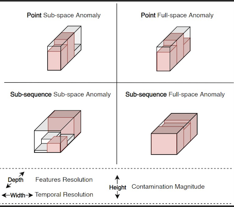
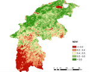
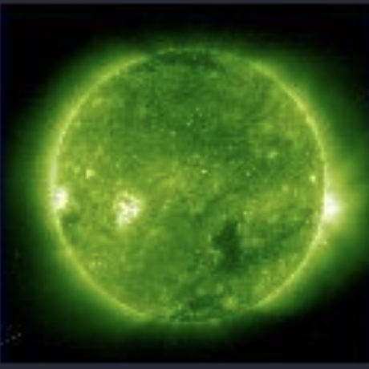
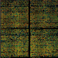
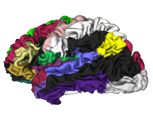
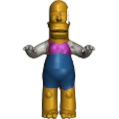
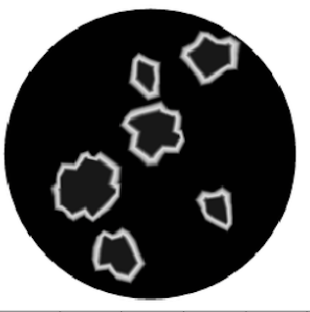
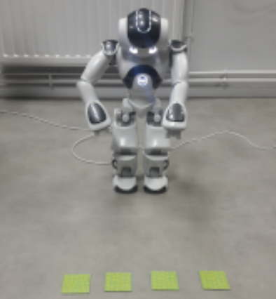
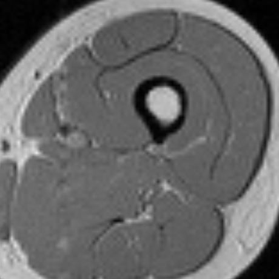
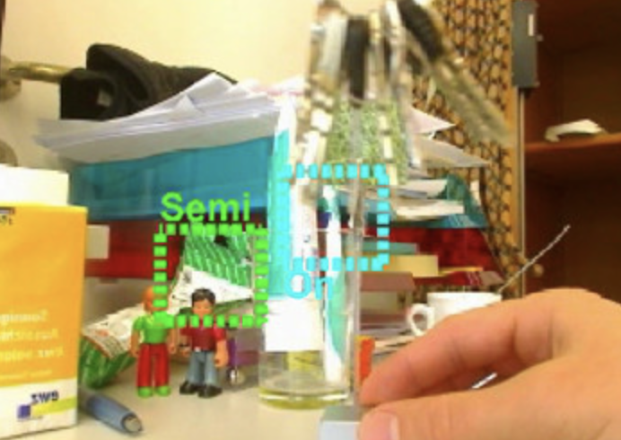

Homepage - Vincent BARRA
About
Research
Publications
Talks
phD Students
Teaching
Admin
Contact
On this page
Current projects
Past projects
Research projects
Current projects

Anomaly detection
Anomaly detection aims at identifying rare items, events or observations which deviate…
Computer Science and Volcanology
Volcanic hydrothermal systems are poorly-considered, long-fuse environmental time bombs. They…

Satellite images analysis
Remote sensing is an important technique for observing Earth surface applied to different areas…

Solar Image Processing
We apply machine and deep learning techniques to the analysis of coronal images.
No matching items
Past projects

Bioinformatics
Microarray images push to their limits classical analysis methods. New approaches are thus needed…

Brain Image processing
Brain surfaces provide a reliable representation for cortical mapping. The construction of correct…

Computational geometry
We develop methods combining computational geometry and machine learning to retrieve 3D shapes…

Deep Learning for Electrical Impedance Tomography
Electrical impedance tomography is an effective, non-ionizing, and inexpensive imaging modality…

Social Robotics
At the interface between Humanities and Engineering Sciences, we develop research activities on…

Thigh image processing
Physical training, surgery or alterations in spontaneous activity are proved to induce changes in…

Tracking
2D multi-person pose estimation and 3D root-relative pose estimation from a monocular RGB camera…
No matching items